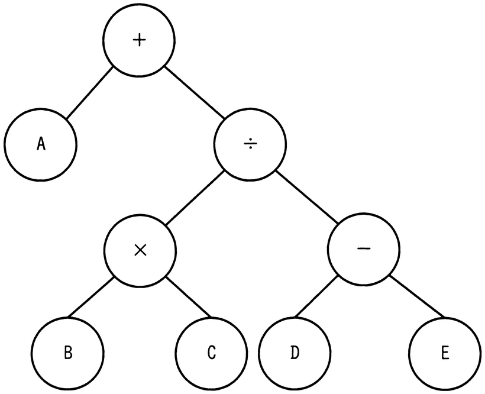

各ノードがもつデータを出力する再帰処理f（ノードn）を定義した。この処理を，図の2分木の根（最上位のノード）から始めたときの出力はどれか。
〔f（ノードn）の定義〕
1．ノードnの右に子ノードrがあれば，f（ノードr）を実行
2．ノードnの左に子ノードlがあれば，f（ノードl）を実行
3．再帰処理f（ノードr），f（ノードl）を未実行の子ノード，又は子ノードがなければ，ノード自身がもつデータを出力
4．終了

ア ＋÷−ED×CBA
イ ABC×DE−÷＋
ウ E−D÷C×B＋A
エ ED−CB×÷A＋